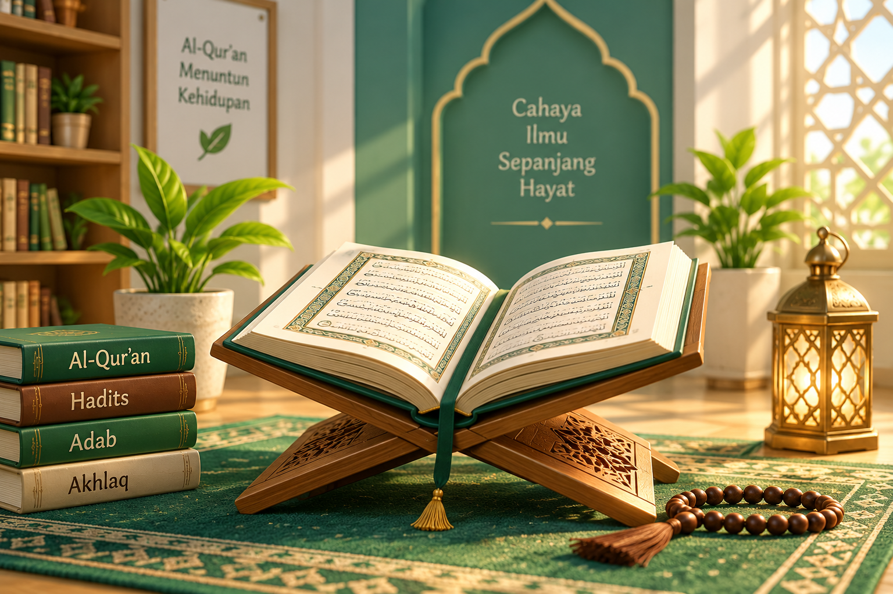
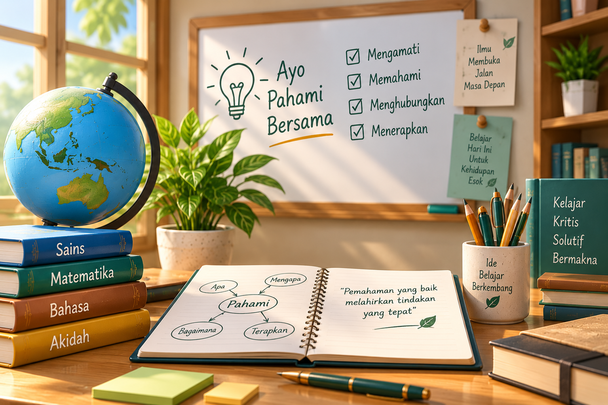
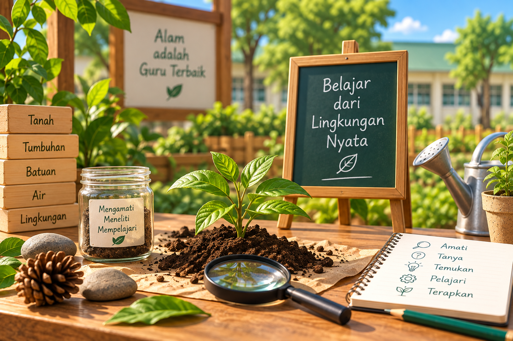
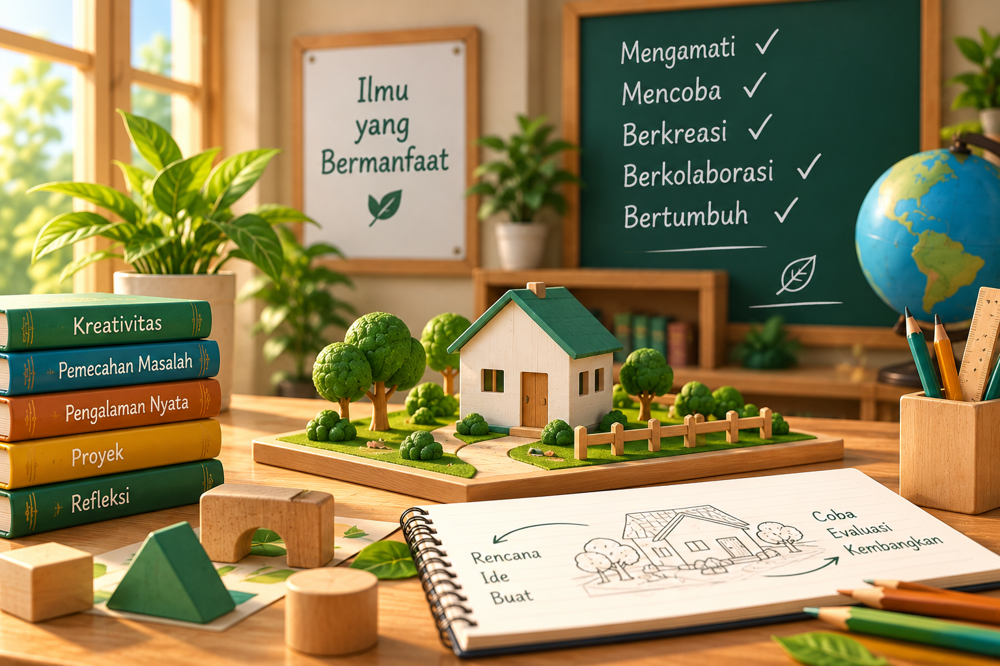
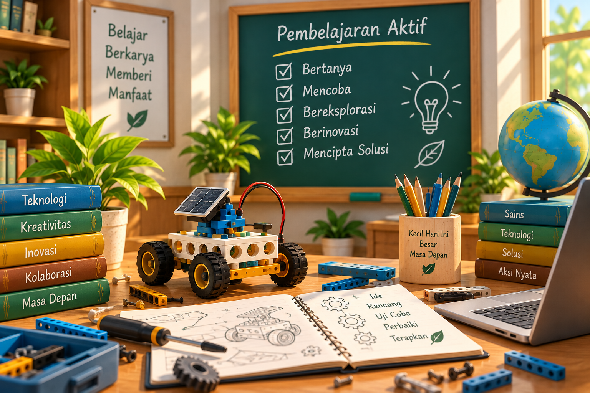

Sekolah dasar Islam terpadu yang mengintegrasikan Al-Qur'an, adab, akademik, dan pengalaman belajar nyata untuk menumbuhkan generasi Muslim yang berilmu, berakhlak, mandiri, dan siap mengamalkan kebaikan.
Informasi PPDB →SD IT Anak Muslim adalah sekolah dasar Islam terpadu yang menghadirkan pendidikan berbasis Al-Qur'an, pembentukan adab dan karakter, penguatan akademik, serta pengalaman belajar yang nyata dan aplikatif.
Kami meyakini bahwa pendidikan anak tidak cukup hanya membuat anak tahu dan hafal, tetapi harus membantunya memahami, mengalami, mempraktikkan, dan membiasakan kebaikan.
Dengan pendekatan QURMA — Quranic, Real Media & Active Learning, kami berusaha menghadirkan pembelajaran yang membuat ilmu lebih dekat dengan kehidupan anak.
Kami mengembangkan proses pendidikan dengan empat fondasi utama yang menghubungkan nilai Islam, adab, pengalaman nyata, dan keterlibatan aktif anak dalam belajar.
Al-Qur'an tidak hanya dibaca dan dihafalkan, tetapi menjadi sumber nilai yang dipahami dan dihubungkan dengan kehidupan anak.
Pendidikan karakter dibangun melalui pembiasaan sehari-hari, mulai dari adab belajar, kebersihan, berbicara, berteman, hingga tanggung jawab.
Anak belajar dengan melihat, menyentuh, mencoba, mengolah, mengamati, dan menghasilkan sesuatu melalui lingkungan serta media nyata.
Anak diajak mengamati, bertanya, mencoba, mengolah, berdiskusi, menghasilkan karya, dan merefleksikan proses belajarnya.
QURMA adalah pendekatan pembelajaran khas SDIT Anak Muslim yang mengintegrasikan nilai-nilai Al-Qur'an dengan media nyata dan pembelajaran aktif.
Pembelajaran tidak berhenti pada “anak tahu”, tetapi berkembang menjadi anak paham, mencoba, terbiasa, dan mampu mengamalkan.

Pembelajaran berangkat dari nilai Al-Qur'an dan Sunnah yang relevan dengan kehidupan anak.

Anak dibimbing memahami apa yang dipelajari, mengapa hal itu penting, dan bagaimana menerapkannya.

Lingkungan dan benda nyata digunakan sebagai media untuk membantu anak memahami pembelajaran.

Ilmu dihubungkan dengan pengalaman nyata sehingga pembelajaran menjadi lebih bermakna.

Anak aktif mencoba, berdiskusi, membuat karya, memecahkan masalah, dan melakukan refleksi.
Misalnya anak belajar menggunakan tema “Air”. Satu tema dapat menjadi pintu masuk untuk memahami berbagai bidang ilmu sekaligus.
Mengenal ayat atau hadis tentang air, nikmat Allah, kebersihan, dan rasa syukur.
Mengenal kosa kata, membaca, menulis, dan menyusun kalimat.
Mengukur volume dan membandingkan jumlah.
Mengamati sifat dan perubahan air melalui eksperimen sederhana.
Belajar hemat air, menjaga kebersihan, dan bertanggung jawab.
Melakukan praktik atau menghasilkan karya sederhana.
Kegiatan harian dirancang dengan keseimbangan antara ruhiyah, akademik, karakter, dan keterampilan hidup.
Anak dikenalkan dengan keterampilan sederhana yang dekat dengan kehidupan seperti mengelola makanan, merapikan barang, menggunakan alat dengan aman, bekerja sama, serta menyelesaikan tugas secara mandiri.
Visi ini menggambarkan tujuan pendidikan SDIT Anak Muslim: melahirkan anak yang memiliki fondasi iman dan adab, kemampuan akademik, mampu menghadapi tantangan, serta memberikan manfaat bagi lingkungan sekitarnya.
Melalui Al-Qur'an, Sunnah, ibadah, zikir, doa, dan pembiasaan nilai Islam.
Membangun budaya sekolah yang menjadikan adab bagian dari setiap aktivitas anak.
Mengembangkan literasi, numerasi, sains, bahasa, kreativitas, dan kemampuan memecahkan masalah.
Menerapkan QURMA melalui media nyata, eksperimen, praktik, proyek, dan pengalaman langsung.
Melatih anak mengelola diri, menyelesaikan tugas, dan bertanggung jawab terhadap pilihannya.
Memberikan pengalaman praktis yang relevan dengan kehidupan sehari-hari.
Menjadikan orang tua sebagai mitra dalam membangun ilmu, adab, ibadah, dan karakter anak.
Kami berharap setiap lulusan memiliki keseimbangan antara nilai-nilai Islam, kemampuan akademik, kemandirian, dan kepedulian terhadap sesama.
Mengenal Allah, mencintai Al-Qur'an dan Sunnah, serta memiliki kesadaran beribadah.
Mampu membaca Al-Qur'an, memiliki hafalan, memahami nilai ayat, dan berusaha mengamalkannya.
Memiliki kebiasaan adab terhadap orang tua, guru, teman, dan lingkungan.
Memiliki fondasi literasi, numerasi, sains, bahasa, dan kemampuan memecahkan masalah.
Memiliki rasa ingin tahu, mampu mengamati, bertanya, mencoba, dan belajar dari pengalaman.
Mampu menghubungkan ilmu dengan kehidupan nyata.
Mampu mengurus kebutuhan sederhana dan menyelesaikan tanggung jawab.
Terbiasa menghadapi tantangan dan belajar kembali ketika mengalami kesulitan.
Memiliki kepedulian dan terdorong memberikan manfaat bagi lingkungan.
Kami tidak ingin anak hanya pulang membawa nilai ujian. Kami ingin anak pulang membawa ilmu yang dipahami, adab yang dibiasakan, keterampilan yang dimiliki, dan kebaikan yang diamalkan.
Dapatkan informasi pendaftaran, biaya pendidikan dan jadwal penerimaan siswa baru.